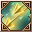
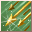
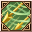
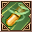
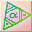

Loading...
Items
Weapons
Sword
Hammer
Axe
Two-Handed Sword
Two-Handed Hammer
Two-Handed Axe
Bow
Firearm
Relic
Staff
Shield
One-Handed Mecha Weapon
Two-Handed Mecha Weapon
Artillery
Arrows
Shells
Crystal
Katana
Armor
Head
Body
Legs
Hands
Feets
Back
Accesory
Backpack
Special Equipment
One-Handed Equipment
Two-Handed Equipment
Headgear
Back
Body
Talents Items
Talent Card
Talent Plane
Talent Fragment
Talent Skill
Power Stone
Sprite
Sprite
Jug Monster
Backpack
Sprite Island Formule
Sprite Island Breeding
Sprite Island Recipes
Sprite Island Buildings
Sprite Customes
Sprite Workbench
Sprite Emblem
Skill Book(Novice)
Skill Book(Intermediate)
Skill Book(Advanced)
Supplies
Mining
Foraging
Hunting
Crafting Ingredients
Piedras de Equipo
Gem Stone
Rune Stone
Resonance Stone
Nucleus
Mounts
Thrones
Comb Talents
Berserker
Paladin
Ranger
Assassin
Cleric
Sage
Wizard
Necromancer
Enginer
Demolitionist
Void Runner
Time Traveler
Quest
Titles
Skills
Berserker
Paladin
Ranger
Assassin
Cleric
Sage
Wizard
Necromancer
Enginer
Demolitionist
Void Runner
Time Traveler
Sprites
Portuguese
English
Spanish
Portuguese
French
Suggestions
Contact Us
Credits
Make Alchemy
F.A.Q
Time
00
:
00
:
00
Emissaries Timer
<Avatar do Emissário>Anunciador da Luxúria
Floresta Antiga (X:290, Y:370) Monday 20:35
<Emissário Lunático> Loucura da Luxúria
Vale dos Cavaleiros (X:510.53, Y:619.852) Monday 20:35
<Emissário Pesadelo> Ladona Voraz
Arena de Combate do território ilusório (X:134.088, Y:347.754) Monday 15:30
Emissário Antigo Justiça
Vale dos Espíritos (X:439.138, Y:559.115) Monday 20:30
<Emissário Ilusionista> Alpha Yen
Aldeia Aura Ilusória (X:639.151, Y:232.943) Monday 15:30
<Emissário Ilusionista> Iota Zhong
Passagem da Chama de Fogo Congelante (X:534.548, Y:578.733) Monday 20:30
Skills Ranger
Skills
Passive Skills
Name
Level
Effect
Tiro Força de Pedra 1
Skills
×
Tiro Força de Pedra 1
Tiro Força de Pedra 2
Tiro Força de Pedra 3
Tiro Força de Pedra 4
Ataque Acorrentador 1
Ataque Acorrentador 2
Pancada das Correntes 1
Pancada das Correntes 2
6
Info
Tiro Poderoso 1
Skills
×
Tiro Poderoso 1
Tiro Poderoso 2
Tiro Poderoso 3
Tiro Poderoso 4
Tiro Poderoso 5
Tiro Forte 6
Tiro Rastreador 1
Tiro Rastreador 2
Tiro Poderoso Perseguidor 1
Tiro Poderoso Perseguidor 2
6
Info
Tiro Chocante 1
Skills
×
Tiro Chocante 1
Tiro Chocante 2
Tiro Chocante 3
Tiro Chocante 4
Tiro Chocante 5
Tiro Chocante 6
Tiro Poderoso 1
Tiro Poderoso 2
Tiro Poderoso Duro 1
Tiro Poderoso Duro 2
6
Info
Reflexos Relâmpagos 1
Skills
×
Reflexos Relâmpagos 1
Reflexos Relâmpagos 2
Reflexos Relâmpagos 3
Reflexos de Trovão 1
8
Info
Tiro Presa Dupla 1
Skills
×
Tiro Presa Dupla 1
Tiro Presa Dupla 2
Tiro Presa Dupla 3
Tiro Presa Dupla 4
Flecha de Três Tiros 1
Tiro Triplo 2
Tiro Triplo com a Besta 1

Tiro Triplo com a Besta 2
16
Info
Tiro Corta Armadura 1
Skills
×
Tiro Corta Armadura 1
Tiro Corta Armadura 2
Tiro Corta Armadura 3
Tiro Destruidor de Armadura 1
Tiro Destruidor de Armadura 2
Tiro Poderoso Perfurador de Armadura 1
Tiro Poderoso Perfurador de Armadura 2
16
Info
Stopping Shot 1
Skills
×
Stopping Shot 1
Stopping Shot 2
Stopping Shot 3
Stopping Shot 4
31
Info
Predador Silencioso 1
Skills
×
Predador Silencioso 1
Predador Silencioso 2
Predador Silencioso 3
Predador Silencioso 4
Alto Nível de Discrição 1
Predador Silencioso 2
31
Info
Reflexo de Mangusto 1
Skills
×
Reflexo de Mangusto 1
Reflexo de Mangusto 2
Reflexo de Mangusto 3
Reflexo de Mangusto 4
Reflexo de Mangusto 5
Reflexos Rápidos 1
Reflexos Rápidos 2
Reflexo Relâmpago 1
Reflexo Relâmpago 2
31
Info
Golpe Nocauteador 1
Skills
×
Golpe Nocauteador 1
Golpe Nocauteador 2
Golpe Nocauteador 3
Golpe Nocauteadorador 4
Golpe Nocauteadorador 5
Golpe Nocauteadorador 6
Golpe Nocauteador Aperfeiçoado 1
Golpe Nocauteador Aperfeiçoado 2
Golpe Nocauteador 3
Tiro Poderoso Perfurador de Armadura 1
Tiro Poderoso Perfurador de Armadura 2
31
Info
Tiro de Basilisco 1
Skills
×
Tiro de Basilisco 1
Tiro de Basilisco 2
Tiro de Basilisco 3
Tiro de Basilisco 4
Tiro de Basilisco 5
Tiro de Basilisco 6
Explosão Rompe-Veias 1
Explosão Rompe-Veias 2
Explosão Rompe-Veias 3
Super Tiro do Paralisante 1
Super Tiro Paralisante 2
31
Info
Chuva de Meteoro 1
Skills
×
Chuva de Meteoro 1
Chuva de Meteoro 2
Chuva de Meteoro 3
Chuva de Meteoro 4
Chuva de Meteoro 5
Chuva de Meteoro 6
Chuva de Meteoro 7
Chuva de Meteoro 8
Chuva de Meteoro 9
Chuva de Cometa 1
Chuva de Cometa 2
Chuva de Cometa 3
Chuva de Cometa 4
Chuva de Cometa 5
Chuva Poderosa de Cometas 1
Chuva Poderosa de Cometas 2
Chuva Poderosa de Cometas 3
Chuva Poderosa de Cometas 4
31
Info
Monstro Controle 1
Skills
×
Monstro Controle 1
Monstro Controle 2
Monstro Controle 3
Monstro Controle 4
Monstro de Alto Controle 1
Monstro de Alto Controle 2
Monstro de Alto Controle 3
32
Info
Desvio de Doninha 1
Skills
×
Desvio de Doninha 1
Desvio de Doninha 2
Desvio de Doninha 3
Desvio de Doninha 4
Desvio de Doninha 5
Desvio Ágil 1
32
Info
Vendaval Cortante 1
Skills
×
Vendaval Cortante 1
Vendaval Cortante 2
Vendaval Cortante 3
Vendaval Cortante 4
Vendaval Cortante 5
Vendaval Cortante 6
Lâmina de Furacão 1
Lâmina de Furacão 2
Lâmina de Furacão 3
Super Lâmina do Furacão 1
Super Lâmina do Furacão 2
Super Lâmina do Furacão 3
32
Info
Tiro Voo Engolido 1
Skills
×
Tiro Voo Engolido 1
Tiro Voo Engolido 2
Tiro Voo Engolido 3
Tiro Voo Engolido 4
Tiro Voo Engolido 5
Tiro Voo Engolido 6
Tiro Voo Engolido 7
Tiro Voo Engolido 8
Tiro Voo Engolido 9
Tiro de Metralhadora 1
Tiro de Metralhadora 2
Tiro de Metralhadora 3
Tiro de Metralhadora 4
Desespero 5
Tiro Poderoso Paralisante 1
Tiro Poderoso Paralisante 2
Tiro Poderoso Paralisante 3
Tiro Poderoso Paralisante 4
32
Info
Tiro Silencioso 1
Skills
×
Tiro Silencioso 1
Tiro Silencioso 2
Tiro Silencioso 3
Tiro Silencioso 4
Tiro Silencioso 5
Tiro Silencioso 6
Tiro de Super Demônio 1
Tiro do Super Demônio 2
Tiro do Super Demônio 3
Tiro Super Poder Demoníaco 1
Tiro Super Poder Demoníaco 2
Tiro Super Poder Demoníaco 3
34
Info
Furo Escondido 1
Skills
×
Furo Escondido 1
Furo Escondido 2
Furo Escondido 3
Furo Escondido 4
Furo Escondido 5
Furo Escondido 6
Furo Escondido 7
Furo Escondido 8
Golpe Penetrante 1
Golpe Penetrante 2
Golpe Penetrante 3
Golpe Penetrante 4
Golpe Penetrante 5
Tiro Poderoso Rápido 1
Flecha Alma Cortante 1
Tiro Poderoso Rápido 3
Tiro Poderoso Rápido 4
34
Info
Invocar o Selvagem 1
Skills
×
Invocar o Selvagem 1
Invocar o Selvagem 2
Invocar o Selvagem 3
Invocar o Selvagem 4
Invocar o Selvagem 5
Invocar o Selvagem 6
Invocar o Selvagem 7
Invocar Rei Leopardo 1
Invocar Rei Leopardo 2
Invocar Rei Leopardo 3
Invocar Rei Leopardo 4
Flecha Alma Cortante 2
Chamada do Rei Leopardo 5
Invocar Rei Leopardo 7
Invocar Rei Leopardo 8 <br>
40
Info
Golpe Garra de Urso 1
Skills
×
Golpe Garra de Urso 1
Golpe Garra de Urso 2
Golpe Garra de Urso 3
Golpe Garra de Urso 4
Golpe Garra de Urso 5
Golpe Garra de Urso 6
Golpe Garra de Urso 7
Golpe Focado 1
Golpe Focado 2
Golpe Focado 3
Golpe Focado 4
61
Info
Besta Controle
Skills
×
Besta Controle
61
Info

Voleio Selvagem 1
Skills
×
Voleio Selvagem 1
Voleio Selvagem 2
Voleio Selvagem 3
Voleio Selvagem 4
Voleio Selvagem 5
Voleio Selvagem 6
Voleio Selvagem 7
66
Info
Farejador de Tesouro 1
Skills
×
Farejador de Tesouro 1
Farejador de Tesouro 2
Farejador de Tesouro 3
66
Info
Liberação Potencial
Skills
×
Liberação Potencial
66
Info
Escapou sem deixar rastros
Skills
×
Escapou sem deixar rastros
66
Info
Chuva de Flechas
Skills
×
Chuva de Flechas
66
Info
Tiro de Alma 1
Skills
×
Tiro de Alma 1
Tiro de Alma 2
Tiro de Alma 3
Tiro de Alma 4
Tiro de Alma 5
67
Info
Tiro Perfurador de Armadura 1
Skills
×
Tiro Perfurador de Armadura 1
Tiro Perfurador de Armadura 2
Tiro Perfurador de Armadura 3
Tiro Perfurador de Armadura 4
Tiro Perfurador de Armadura 5
Tiro Perfurador de Armadura 6
68
Info
Cortador de Salgueiro 1
Skills
×
Cortador de Salgueiro 1
Cortador de Salgueiro 2
Cortador de Salgueiro 3
Cortador de Salgueiro 4
Cortador de Salgueiro 5

Cortador de Salgueiro 6
Cortador de Salgueiro 7
69
Info
Tiro em Curva Rápido
Skills
×
Tiro em Curva Rápido
84
Info
Tiro da Víbora 1
Skills
×
Tiro da Víbora 1
Tiro da Víbora 2
Tiro da Víbora 3
Tiro da Víbora 4
Tiro da Víbora 5
86
Info
Tiro Perfurador Final 1
Skills
×
Tiro Perfurador Final 1
Tiro Perfurador Final 2
Tiro Perfurador Final 3
Tiro Perfurador Final 4
Tiro Perfurador Final 5
86
Info
Postura Normal
Skills
×
Postura Normal
86
Info
Postura de Sniper 1
Skills
×
Postura de Sniper 1
Postura de Sniper 2
86
Info

Perseguição fatal
Skills
×
Perseguição fatal
91
Info
Marca de Caça
Skills
×
Marca de Caça
91
Info
Rastrear Alvo
Skills
×
Rastrear Alvo
91
Info
Tiro Silencioso
Skills
×
Tiro Silencioso
91
Info
Tiro Fantasma
Skills
×
Tiro Fantasma
91
Info
Name
Level
Effect

Alma Arrebentada a
Skills
×
Alma Arrebentada a
Alma Arrebentada ß
Alma Arrebentada ß
Alma Arrebentada d
6
Info
Opportunism 1
Skills
×
Opportunism 1
Opportunism 2
Opportunism 3
Opportunism 3
Opportunism 4
Opportunism 4
Opportunism 5
Opportunism 5
Opportunism 6
Opportunism 6
6
Info
Tiro Poderoso Aperfeiçoado 1
Skills
×
Tiro Poderoso Aperfeiçoado 1
Tiro Poderoso Aperfeiçoado 2
Tiro Poderoso Aperfeiçoado 3
Tiro Poderoso Aperfeiçoado 4
Tiro Poderoso Aperfeiçoado 5
6
Info
Tiro Atordoante Aperfeiçoado 1
Skills
×
Tiro Atordoante Aperfeiçoado 1
Tiro Atordoante Aperfeiçoado 2
Tiro Atordoante Aperfeiçoado 3
Tiro Atordoante Aperfeiçoado 4
Tiro Atordoante Aperfeiçoado 5
6
Info
Tiro Força de Pedra Aperfeiçoado 1
Skills
×
Tiro Força de Pedra Aperfeiçoado 1
Tiro Força de Pedra Aperfeiçoado 2
Tiro Força de Pedra Aperfeiçoado 3
Tiro Força de Pedra Aperfeiçoado 4
Tiro Força de Pedra Aperfeiçoado 5
6
Info
Atirador Perito
Skills
×
Atirador Perito
6
Info
Reflexos de Relâmpago Aperfeiçoados 1
Skills
×
Reflexos de Relâmpago Aperfeiçoados 1
Reflexos de Relâmpago Aperfeiçoados 2
Reflexos de Relâmpago Aperfeiçoados 3
Reflexos de Relâmpago Aperfeiçoados 4
Reflexos de Relâmpago Aperfeiçoados 5
8
Info
Tiro Duplo Aperfeiçoado 1
Skills
×
Tiro Duplo Aperfeiçoado 1
Tiro Duplo Aperfeiçoado 2
Tiro Duplo Aperfeiçoado 3
Tiro Duplo Aperfeiçoado 4
Tiro Duplo Aperfeiçoado 5
16
Info
Luta com Dual Armas
Skills
×
Luta com Dual Armas
16
Info
Golpe Nocauteador Aperfeiçoado 1
Skills
×
Golpe Nocauteador Aperfeiçoado 1
Golpe Nocauteador Aperfeiçoado 2
Golpe Nocauteador Aperfeiçoado 3
Golpe Nocauteador Aperfeiçoado 4
Golpe Nocauteador Aperfeiçoado 5
31
Info
Chuva de Meteoros Melhorada 1
Skills
×
Chuva de Meteoros Melhorada 1
Chuva de Meteoros Melhorada 2
Chuva de Meteoros Melhorada 3
Chuva de Meteoros Melhorada 4
Chuva de Meteoros Melhorada 5
31
Info
Tiro de Deslize Raso Aperfeiçoado 1
Skills
×
Tiro de Deslize Raso Aperfeiçoado 1
Tiro de Deslize Raso Aperfeiçoado 2
Tiro de Deslize Raso Aperfeiçoado 3
Tiro de Deslize Raso Aperfeiçoado 4
Tiro de Deslize Raso Aperfeiçoado 5
32
Info
Tiro com Silenciador Aperfeiçoado 1
Skills
×
Tiro com Silenciador Aperfeiçoado 1
Tiro com Silenciador Aperfeiçoado 2
Tiro com Silenciador Aperfeiçoado 3
Tiro com Silenciador Aperfeiçoado 4
Tiro com Silenciador Aperfeiçoado 5
34
Info
Perfuração do Couro Melhorada 1
Skills
×
Perfuração do Couro Melhorada 1
Perfuração do Couro Melhorada 2
Perfuração do Couro Melhorada 3
Perfuração do Couro Melhorada 4
Perfuração do Couro Melhorada 5
34
Info
Desvio Instintivo 1
Skills
×
Desvio Instintivo 1
Desvio Instintivo 2
Desvio Instintivo 3
Desvio Instintivo 4
Desvio Instintivo 5
Desvio Instintivo 6
66
Info
Golpe Nocauteador Superaperfeiçoado 1
Skills
×
Golpe Nocauteador Superaperfeiçoado 1
Golpe Nocauteador Superaperfeiçoado 2
Golpe Nocauteador Superaperfeiçoado 3
Golpe Nocauteador Superaperfeiçoado 4
Golpe Nocauteador Superaperfeiçoado 5
66
Info
Assalto Trovão 1
Skills
×
Assalto Trovão 1
Assalto Trovão 2
Assalto Trovão 3
66
Info
Tiro Preciso 1
Skills
×
Tiro Preciso 1
Tiro Preciso 2
Tiro Preciso 3
66
Info
Golpe Penetrante Aperfeiçoado 1
Skills
×
Golpe Penetrante Aperfeiçoado 1
Golpe Penetrante Aperfeiçoado 2
Golpe Penetrante Aperfeiçoado 3
Golpe Penetrante Aperfeiçoado 4
Golpe Penetrante Aperfeiçoado 5
66
Info
Chuva de Cometa Melhorada 1
Skills
×
Chuva de Cometa Melhorada 1
Chuva de Cometa Melhorada 2
Chuva de Cometa Melhorada 3
Chuva de Cometa Melhorada 4
Chuva de Cometa Melhorada 5
66
Info
Tiro Rastreador Aperfeiçoado 1
Skills
×
Tiro Rastreador Aperfeiçoado 1
Tiro Rastreador Aperfeiçoado 2
Tiro Rastreador Aperfeiçoado 3
Tiro Rastreador Aperfeiçoado 4
Tiro Rastreador Aperfeiçoado 5
68
Info
Tiro Feroz Aperfeiçoado 1
Skills
×
Tiro Feroz Aperfeiçoado 1
Tiro Feroz Aperfeiçoado 2
Tiro Feroz Aperfeiçoado 3
Tiro Poderoso Aperfeiçoado 4
Tiro Poderoso Aperfeiçoado 5
68
Info
Tiros Triplos Aperfeiçoados 1
Skills
×
Tiros Triplos Aperfeiçoados 1
Tiros Triplos Aperfeiçoados 2
Tiros Triplos Aperfeiçoados 3
Tiros Triplos Aperfeiçoados 4
Tiros Triplos Aperfeiçoados 5
68
Info
Ataque Acorrentador Aperfeiçoado 1
Skills
×
Ataque Acorrentador Aperfeiçoado 1
Ataque Acorrentador Aperfeiçoado 2
Ataque Acorrentador Aperfeiçoado 3
Ataque Acorrentador Aperfeiçoado 4
Ataque Acorrentador Aperfeiçoado 5
68
Info
Tiro de Metralhadora Aperfeiçoado 1
Skills
×
Tiro de Metralhadora Aperfeiçoado 1
Tiro de Metralhadora Aperfeiçoado 2
Tiro de Metralhadora Aperfeiçoado 3
Tiro de Metralhadora Aperfeiçoado 4
Tiro de Metralhadora Aperfeiçoado 5
68
Info
Tiro de Super Demônio Aperfeiçoado 1
Skills
×
Tiro de Super Demônio Aperfeiçoado 1
Tiro de Super Demônio Aperfeiçoado 2
Tiro de Super Demônio Aperfeiçoado 3
Tiro de Super Demônio Aperfeiçoado 4
Tiro de Super Demônio Aperfeiçoado 5
70
Info
Reflexos de Trovão Aperfeiçoados 1
Skills
×
Reflexos de Trovão Aperfeiçoados 1
Reflexos de Trovão Aperfeiçoados 2
Reflexos de Trovão Aperfeiçoados 3
Reflexos de Trovão Aperfeiçoados 4
Reflexos de Trovão Aperfeiçoados 5
72
Info
Alma Ágil 1
Skills
×
Alma Ágil 1
Alma Ágil 2
Alma Ágil 3
Alma Ágil 4
Alma Ágil 5
86
Info
Sede de Vitória 1
Skills
×
Sede de Vitória 1
Sede de Vitória 2
86
Info
Contra-ataque Repentino 1
Skills
×
Contra-ataque Repentino 1
91
Info
Credits
×
Developers:
Kougami
EX GS Angelique
Collaborators:
EX GS Roshi
EX GS Marchel
Contact Us
×
Contact emails
admin@grandfantasia-db.com